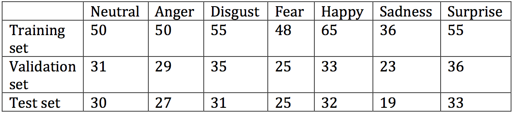

PROJECT INFO
Members:
Zeming Li
Supervisor:
Prof. Kostas N. Plataniotis
Automated Face Analysis by Feature Tracking and Expression Recognition
The face is an important information source for communication and interaction. This project aims to provide a robust facial feature tracking method based on active shape models and develop convolutional neural networks for a facial expression recognition task. The applications developed in this project achieve satisfactory performance.Sub-Project Links
- 1. Facial Feature Tracking Using Acitive Shape Models
- 2. Facial Expression Recognition Using Convolutional Neural Networks
Avaliable Resources
Code
- Real-time 77 Facial Points Tracking
- Real-time 194 Facial Points Tracking
- Reading Habits Monitor
- Visual Distraction and Drowsiness Detection
- Convolutional Neural Network Training
- Facial Expression Recognition Using Convolutional Neural Networks
Training Dataset
Video Demos
1. Facial Feature Tracking Using Acitive Shape Models
The main purpose of facial feature tracking is to localize the facial features and track the movements of all features. Facial feature localization as a part of preprocessing stages for face recognition has a crucial impact on the performance of the whole system.
Fig 1: The process of facial feature localization and its applications.
The location of facial features can be represented as landmarks on the face. The shape of a face can be represented as a vector of the coordinates of facial landmarks. Therefore, the shape model offers the geometric information of each landmark and the overall shape the object which is the face in this case. The Active Shape Model(ASM) start to search from the mean shape which is obtained from the training and the face is initially located by a face detector. It iterates to suggest a tentative shape by template matching the image texture around each facial landmark and conform the tentative shape to a global shape until convergence. Facial feature localization is a pivotal stage in many computer vision applications(e.g. human-computer interaction, facial animation, and face recognition).
1.1 An Active Shape Model (ASM) Trained on HELEN Dataset
Helen dataset has 2330 diversiform high-resolution images obtained from the social media. Most images are cropped from the original versions with a face and a proportional amount of background. It offers a wide range of diverse appearance variations and conditions. Besides, automated methods were applied to enforce consistency and uniformity in the dataset, and each manually labeled face was reviewed to identify the errors of location landmarks on training images. Consequently, Helen dataset offers diversiform images with precise, detailed and consistent annotations, which is ideal for training an optimized active shape model.
Fig 2: Some apperance diversity examples from Helen dataset
- HELEN Dataset [194-landmark-model file]
There are two main reasons for training the optimized Stasm on Helen dataset. One is to improve the detection accuracy under different circumstances such as out-of-plane poses, illumination effects, and uncertain facial expressions. It has been proven that the drawback of the ASM would be revealed on rotated faces and face with complex illumination conditions. For another, the larger number of landmarks conveys more biometric information. Some high-level applications such as facial expression understanding, face spoofing detection or face matching require a larger number of landmarks as well as accurate spatial location. Therefore, the new model trained on Helen dataset could generate a new 194-landmark model, eliminating interference factors and offering more useful information.
The library used for training and executing ASM search is Stasm(Stacked Trimmed ASM) The annotation file is merged and edited by Shell commands. Some images are labeled by appearance conditions, so the landmarks involved are treated differently during training. The performance is measured by me17(mean error on internal 17 facial landmarks) on the BioID dataset.
Fig 3: The performance of the new ASM(blue) and the Stasm(black) measured by me17
Fig 4: The examples of the new model(right) is robust under various conditions(objects with glasses or with head poses)
Available Windows Applications
- Real-time 77 Facial Points Tracking [source code] [executable file]
- Real-time 194 Facial Points Tracking [source code] [executable file]
- 194 Facial Points Tracking Package [source code] [README file]
1.2 Reading Habit Monitor Using ASM
Gaze direction intuitively reflects the user’s behavior when the user is using the computer. At first, in the calibration process, the application moves the cursor to the four corners of the screen, guiding the user to stare at the four corners individually. Meanwhile, the landmarks on the pupils and around the eyes are recorded as reference values. The application runs as a reading habit monitor, which detects the facial features and estimate the gaze direction from frames captured by the webcam.
Fig 5: The landmarks used for gaze direction estimation. Landmark [38](0) to (3) and landmark [39](0) to (3) are the pupils position when the user looks at the screen corners. Their relative distance to the geometric centre is obtained.
The result of reading habit monitor is represented as a gaze density map. This map has the same size as the screenshot of the window the user read when the application is running. It is divided into 100 blocks and the grayscale of each block indicates the length of time the user spends on the corresponding area on the screen. The grayscale varies from pure black(0) to pure white(255) as the time accumulates. The gaze density map intuitively indicates the gaze movements on the screen, showing the user’s reading habits.
Fig 6: An example of using reading habits monitor to analyze the user's gaze movements when reading CBC news. The gaze density map shown on the right indicates the used spent longer time on the image and titles.
Available Windows Applications
- Reading Habits Monitor [source code] [executable file]
1.3 Visual Distracted and Drowsiness Detection Using ASM
Facial feature localization can be used for facial movements and head pose detection. Particularly, visual distraction and drowsiness are related to facial feature movements, thus in this application, I use geometric information obtained by facial feature localization to estimate horizontal gaze angle and detect eyelid closure. As for facial feature localization in frames of a sequence, after ASM initially locates facial landmarks both ASM and Lukas and Kanade Optical Flow algorithm are alternately implemented on each frame.
Closed eyes can be determined by the geometric distance between the landmarks on the eye contour. PERCLOS (the percentage of eyelid closure) is the most reliable and valid determination of a drowsiness alertness. When the eyes are at least 80% closed in a minute, drowsiness can be detected. In this application, the Euclidean distance between eyelids is calculated on each frame and a queue is used for PERCLOS data. Visual distraction can be determined by horizontal gaze angle. This angle is calculated by the outer corners of eyes, pupils, and geometric centers.
Available Windows Applications
- Visual Distraction and Drowsiness Detection [source code] [executable file]
2. Facial Expression Recognition Using Convolutional Neural Networks
Facial expressions convey rich emotional information in human communication and interpersonal relations. Automatic facial expression recognition is a challenging problem and has many applications in multiple disciplines. It has been proven that convolutional neural networks have advantages in object classification, especially for high-dimensional objects like faces. In this project, CNN models are trained on the Extended Cohn-Kanade (CK+) Dataset to recognize 6 basic emotions and neutral faces. We experimented different CNN architectures and methods such as dropout and batch normalization, ultimately achieving an accuracy of 0.844 on the test set and near real-time performance.
A C++ GUI application and a demo application using the trained CNN model are created to recognize facial expression from face images captured by a camera. These applications use tiny-dnn and Qt5 libraries. The probabilities of 7 emotion classes are shown as the result of the recognition system. The application runs on Windows system, but the trained CNN model has potential to be implemented on multiplatform such as mobile devices and ARM architecture.
Fig 7:The project overview.
2.1 The CNN Model Trained on CK+ Dataset
The Extended Cohn-Kanade (CK+) Dataset
The CK+ dataset, as a widely used dataset, was designed for promoting research into automatically recognizing action units and facial expressions. There are 593 sequences of images captured from videos across 123 subjects and 8 emotion labels in the dataset (neutral + 6 basic emotions + contempt). But only 327 sequences are labeled with one of 7 emotions and 5.5% of sequences with emotion labels are contempt. It is obvious that contempt is not as universal as others. So contempt is ignored in the reclassification.
There are two reasons for reclassification. 1. If only the first frame of the sequence is classified to neutral, and peak frame (last frame in the sequence) is classified to one of the six basic emotions as recommended by the authors, there are not adequate images for training CNNs. In other words, only 309 images are labeled as one of six emotions. 2. The images distribution among 7 emotions is not balanced. Therefore, some frames before the peak labeled frames are added to the corresponding classes. So that the classes with fewer images (e. g. fear, sadness) in the original dataset have more images, and experiments have proven this modification improves the performance of the trained CNN models. Besides, the ratio of the training, validation, test set is 6:2:2.

Fig 8: The modified CK+ dataset used for training convolution neural networks.
- Modified CK+ Dataset [cropped images] [idx3-ubyte file]
Convolutional Neural Network Training
Preprocessing
A region of interest is determined by the result of face detection by Cascade Classifier. Then the region is cropped to 48 by 48 pixels and converted to grayscale. The choice of cropped image size is based on the balance of accuracy and speed, as convolutions can be prohibitively expensive. The pixel data is zero-centered and normalized, so the range changes from [0, 255] to [-1, 1]. For another, the training images are converted to the idx3-ubyte format for convenient parsing.
Training and Evaluation
For the training process, all of the images in the training set are used with 30 epochs and a batch size of 32, and the hyper-parameters of the model are determined by validation experiments with different architectures, optimization algorithms, activation functions and the number of hidden neurons.
- Some hyper-parameters obtained by validation for the CNN model
- Loss Function: cross-entropy
- Hidden Neurons: 128, 256
- Optimization Algorithm: adaptive gradient method (learning= 0.01, epsilon= 1e-8)
- Batch-size: 32, epochs: 30
- Activation Functions: Tanh, ReLU (Rectified Linear Unit), Softmax
Fig 9: The architecture of the CNN model.
Fig 10: The confusion map of the CNN model tested on the CK+ Dataset.
Demo
This demo is for CNNs constructing, training, evaluation and simple demonstration. Correspondingly, there are four modes that can be chosen by input parameters in command line. It can train or test a CNN model on a dataset, and use the model to recognize the facial expressions on frames from the webcam.
2.2 A C++ GUI Application
A C++ GUI application is created based on the CNN model trained in the previous section and Qt5 library. After the model is loaded in the application, a webcam captures user’s images in real-time and the images are shown in the GUI. The probabilities of seven emotion classes are determined by the CNN model and shown below the image. The application is developed and tested on 64-bit Windows system, but it can be run on 32-bit Windows system without any changes and other mainstream platforms with some changes to source code.
Fig 11: The GUI of the application running on Windows 10.
- GUI Application [source code] [executable file][README file]
References
[1] Plataniotis, Konstantinos, and Anastasios N. Venetsanopoulos. Color image processing and applications. Springer Science & Business Media, 2013.
[2] Milborrow, Stephen, and Fred Nicolls. "Active shape models with SIFT descriptors and MARS." In Computer Vision Theory and Applications (VISAPP), 2014 International Conference on, vol. 2, pp. 380-387. IEEE, 2014.
[3] Le, Vuong, Jonathan Brandt, Zhe Lin, Lubomir Bourdev, and Thomas Huang. "Interactive facial feature localization." Computer Vision–ECCV 2012 (2012): 679-692.
[4] Cootes, Timothy F., Christopher J. Taylor, David H. Cooper, and Jim Graham. "Active shape models-their training and application." Computer vision and image understanding 61, no. 1 (1995): 38-59.
[5] Tawari, Ashish, Kuo Hao Chen, and Mohan M. Trivedi. "Where is the driver looking: Analysis of head, eye and iris for robust gaze zone estimation." In Intelligent Transportation Systems (ITSC), 2014 IEEE 17th International Conference on, pp. 988-994. IEEE, 2014.
[6] Jesorsky, Oliver, Klaus J. Kirchberg, and Robert W. Frischholz. "Robust face detection using the hausdorff distance." In International Conference on Audio-and Video-Based Biometric Person Authentication, pp. 90-95. Springer Berlin Heidelberg, 2001.
[7] Krizhevsky, Alex, Ilya Sutskever, and Geoffrey E. Hinton. "Imagenet classification with deep convolutional neural networks." In Advances in neural information processing systems, pp. 1097-1105. 2012.
[8] Karpathy, Andrej, George Toderici, Sanketh Shetty, Thomas Leung, Rahul Sukthankar, and Li Fei-Fei. "Large-scale video classification with convolutional neural networks." In Proceedings of the IEEE conference on Computer Vision and Pattern Recognition, pp. 1725-1732. 2014.
[9] Lucey, Patrick, Jeffrey F. Cohn, Takeo Kanade, Jason Saragih, Zara Ambadar, and Iain Matthews. "The extended cohn-kanade dataset (ck+): A complete dataset for action unit and emotion-specified expression." In Computer Vision and Pattern Recognition Workshops (CVPRW), 2010 IEEE Computer Society Conference on, pp. 94-101. IEEE, 2010.
[10] Bengio, Yoshua. "Practical recommendations for gradient-based training of deep architectures." In Neural networks: Tricks of the trade, pp. 437-478. Springer Berlin Heidelberg, 2012.